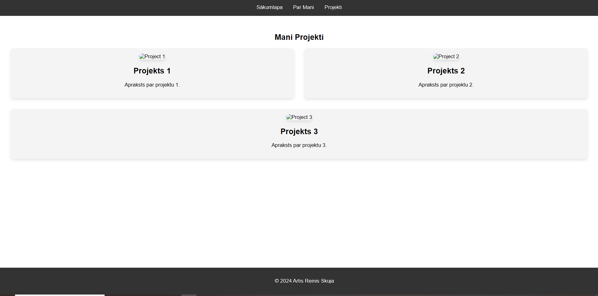
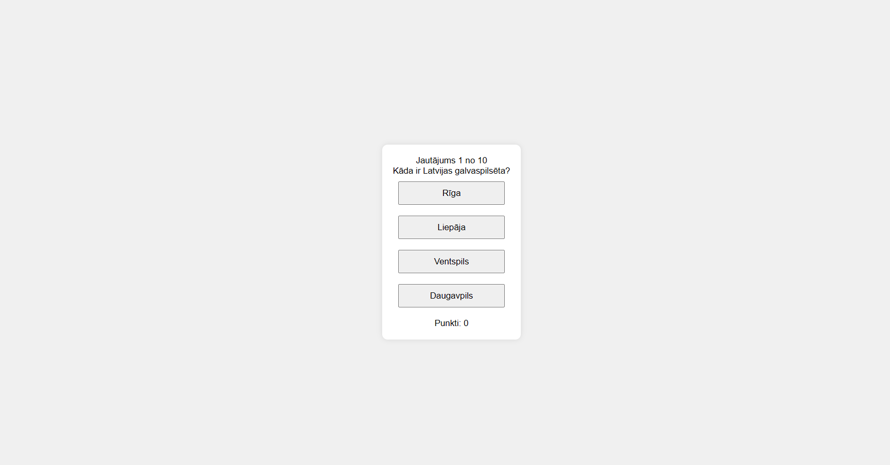
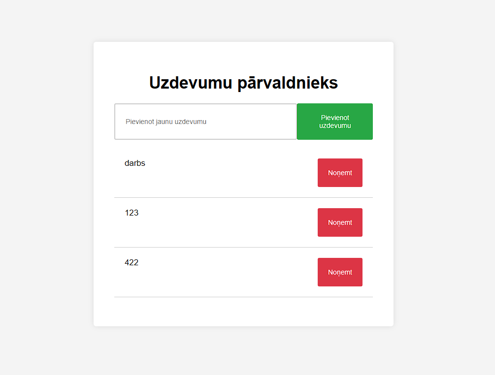

Mani Projekti

Projekts 1
1. Projekts bija izveidot mājaslapu par dzejoļiem, biogrāfijas sadaļu un projektu sadaļu.

Projekts 2
2. Projekts bija izveidot viktorīnu(webquiz) ar 10 jautājumiem un 4 izvēles iespējām, kur beigās lietotājs var "reset" savu rezultātu un mēģināt vēlreiz un var redzēt pareizās/nepareizās atbildes.

Projekts 3
3. Projekts bija izveidot uzdevumu pārvaldnieku, kur lietotājs var pievienot uzdevumus un noņemt tos, un atsvaidzinot mājaslapu uzdevumi nepazūd.